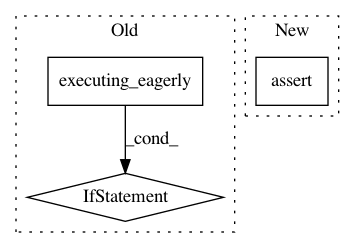

694b2e53a79a020db8d48bb2ced4ab80d0cb962b,tf_agents/drivers/dynamic_episode_driver_test.py,DynamicEpisodeDriverTest,testOneStepUpdatesObservers,#DynamicEpisodeDriverTest#,73
Before Change
self.assertEqual(policy_state, [3])
def testOneStepUpdatesObservers(self):
if tf.executing_eagerly():
self.skipTest("b/123880410")
env = tf_py_environment.TFPyEnvironment(
driver_test_utils.PyEnvironmentMock())
policy = driver_test_utils.TFPolicyMock(
env.time_step_spec(), env.action_spec())
After Change
self.assertEqual(self.evaluate(num_episodes_observer.num_episodes), 5)
// Two steps per episode.
self.assertEqual(self.evaluate(num_steps_observer.num_steps), 10)
self.assertEqual(self.evaluate(num_steps_transition_observer.num_steps), 10)
def testMultiStepUpdatesObservers(self):
env = tf_py_environment.TFPyEnvironment(
driver_test_utils.PyEnvironmentMock())
In pattern: SUPERPATTERN
Frequency: 3
Non-data size: 3
Instances
Project Name: tensorflow/agents
Commit Name: 694b2e53a79a020db8d48bb2ced4ab80d0cb962b
Time: 2019-08-19
Author: oars@google.com
File Name: tf_agents/drivers/dynamic_episode_driver_test.py
Class Name: DynamicEpisodeDriverTest
Method Name: testOneStepUpdatesObservers
Project Name: arogozhnikov/einops
Commit Name: ccaaafd97f805110eb29002f12b61bcd8ae08d61
Time: 2018-10-18
Author: iamfullofspam@gmail.com
File Name: einops/backends.py
Class Name: TensorflowBackend
Method Name: from_numpy
Project Name: arogozhnikov/einops
Commit Name: ccaaafd97f805110eb29002f12b61bcd8ae08d61
Time: 2018-10-18
Author: iamfullofspam@gmail.com
File Name: einops/backends.py
Class Name: TensorflowBackend
Method Name: to_numpy